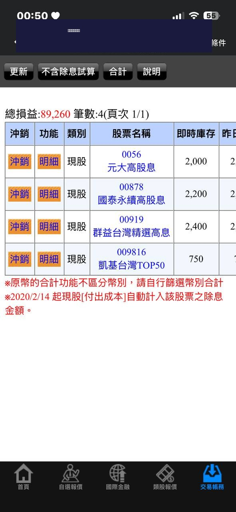

2026 年 6 月台股近況：衝上 46,000 點之後，存股族該怎麼做？
6 月第一週台股就突破 46,000 點，說真的我自己也嚇了一跳。身邊朋友開始問我要不要進場，Line 群組裡也是一片討論聲。我想把我最近的觀察整理一下，順便分享我自己的操作邏輯，給同樣在定期定額存股的朋友參考。
台股 6 月行情回顧
加權指數從 5 月底的 44,000 點附近，一路衝到 6 月 4 日收盤的 46,459 點，漲幅將近 2%。盤中最高還一度觸及 46,552 點，持續刷新歷史新高紀錄。
這波行情的主要推動力，跟 AI 晶片脫不了關係。輝達（NVIDIA）和超微（AMD）在 6 月初接連發表新一代 AI 晶片產品，直接帶動台灣的 AI 供應鏈跟著起飛。台積電的先進封裝訂單滿載，AI 機櫃相關的廣達、英業達也跟著大漲。
整理一下這波上漲的三大利多：
- AI 拉貨潮持續：輝達、超微新品帶動台灣 AI 供應鏈訂單，台積電先進封裝產能滿載，廣達和英業達的 AI 機櫃出貨量大增
- 外資回補買超：外資從 5 月下旬開始連續買超台股，資金回流推升大盤。外資在 5 月中旬一度大幅賣超，現在明顯轉向
- 降息預期升溫：市場預期美國聯準會可能在下半年啟動降息循環，資金從美元資產流向亞洲新興市場，台股因為有 AI 題材加持，成為外資首選
但我注意到幾個風險
大盤創新高的時候，我習慣會去看一些反向指標，不是要嚇自己，而是提醒自己保持冷靜。
第一個讓我注意到的是外資未平倉淨空單已經來到 6 萬口，創下歷史新高。這代表什麼？外資一邊在現貨市場買股票，一邊在期貨市場做空避險。換句話說，外資認為短期可能過熱，隨時準備好了避險部位。這不代表一定會跌，但代表外資自己也不確定這個位置能撐多久。
第二個是美國的 ADP 就業數據。最新一期的數據顯示美國就業市場依然強勁，這反而讓市場擔心聯準會可能延後降息，甚至不排除有升息的可能性。如果降息預期落空，外資回補的力道可能會減弱。
第三個是法人的預估。目前多數券商法人預估台股下檔支撐在 42,000 點附近，上看 46,000 以上。但 5 月已經上演過一次雲霄飛車行情，從 45,000 急殺到 42,000 再拉回來，6 月不排除會重演類似的劇本。
所以我的結論是：短期確實有過熱的跡象，但長期趨勢沒有改變。對存股族來說，這些短期波動其實不需要太在意。
存股族該怎麼做？我的看法
我知道很多朋友看到大盤一直創新高，心裡會很焦慮。有的人焦慮自己沒買到，有的人焦慮手上的股票要不要先賣。以下是我自己的四個操作原則，分享給大家參考：
1. 定期定額繼續扣，不要停
這是我最核心的原則。大盤在 20,000 點的時候我定期定額，在 30,000 點的時候定期定額，現在 46,000 點一樣定期定額。歷史數據已經證明，定期定額的長期報酬跟你「什麼時候開始」的關係不大，跟你「有沒有持續扣」的關係比較大。反而是停扣才會錯過市場反彈的機會。
2. 不要追 AI 概念股
這波漲最兇的就是 AI 概念股，廣達、英業達、緯創這些。但我要提醒存股族，漲最多的標的回檔的時候也會最兇。5 月那波急殺，AI 概念股跌幅都是 10% 起跳。存股族不需要碰這種高波動的標的，穩穩地存高股息 ETF 或金融股就好。
3. 趁機檢視自己的持股殖利率
股價漲了，殖利率就會降。這是很基本的數學：殖利率 = 配息 / 股價。分母變大了，殖利率自然就變小。所以我建議趁這個時間點，用股利計算器重新算一下你目前持股的實際殖利率。如果殖利率已經降到你不滿意的水準，可以考慮把新的資金分配到殖利率更高的標的。
4. 6 月是除息旺季，確認你要不要參與
6 月開始是台股的除息旺季，很多 ETF 和個股都會在這個月除息。特別是 00919 群益台灣精選高息，預計 6/16 除息配 1 元，是今年的第二次配息。如果你持有這些標的，確認一下你要不要參與除息，因為除息後股價會扣掉配息金額，短期帳面上會看到虧損（雖然長期來看填息之後就沒差了）。
6 月重要除息日整理
以下整理幾檔熱門 ETF 的 6 月除息資訊：
| ETF/個股 | 除息日 | 配息金額 | 最後買進日 |
|---|---|---|---|
| 00919 群益台灣精選高息 | 6/16 | 1.00 元 | 6/15 |
| 00981A 主動統一台股增長 | 6/16 | 0.63 元 | 6/15 |
| 00929 復華台灣科技優息 | 每月中旬 | 待公告 | 待公告 |
| 00940 元大台灣價值高息 | 每月中旬 | 待公告 | 待公告 |
以上資料僅供參考，實際除息日期與配息金額請以各投信官方公告為準。
我自己最近做了什麼
說說我自己的操作好了。其實很無聊，就是照常過日子。

我目前的持股：0056（2,000股）、00878（2,200股）、00919（2,400股）、009816（750股）
我的定期定額照常在扣，目前固定扣的是 00878 和 0056，每個月 15 號自動扣款，不管大盤在哪裡。這個月大盤在 46,000 點，扣款金額買到的股數比之前少一點，但這就是定期定額的精神 -- 高點買少一點，低點買多一點，長期下來自然平均。
我沒有加碼，也沒有減碼。加碼的話我不確定現在是不是好時機，減碼的話我沒有那個自信可以猜到頂部。所以乾脆什麼都不做，讓定期定額自己跑。
倒是有一件事我最近做了：我用複利計算器重新跑了一次 10 年預估。因為股價漲了，殖利率跟著降了，所以我想看看對長期複利效果的影響有多大。結果發現，如果配息金額維持不變、只是股價漲了導致殖利率降低，對 10 年後的總報酬影響其實沒有想像中大。因為你定期定額扣款買到的股數雖然少了，但你持有的股票市值也跟著漲了。長短期會互相抵消一部分。
我的結論是：短期漲跌不影響長期存股計畫。這句話聽起來很老套，但做了 10 年預估試算之後，我更確信這一點了。
結語
大盤創新高不代表你要做什麼特別的事。存股的核心就是「不管大盤在哪裡，每月扣款不要停」。如果你跟我一樣是定期定額的，繼續做就好。不需要因為大盤漲了就興奮加碼，也不需要因為擔心回檔就停扣。紀律比判斷重要。
如果你想確認自己目前的殖利率是多少，或是想重新規劃定期定額的金額，可以用下面的工具算算看：
常見問題
台股 46,000 點還可以進場嗎？
如果是定期定額，任何時候都可以進場，因為長期下來會自動平均成本。單筆投入的話就要看個人風險承受度，建議分批進場降低追高風險。
6 月有哪些 ETF 要除息？
00919 群益台灣精選高息預計 6/16 除息，配息 1.00 元。00929 和 00940 為每月配息，6 月中旬除息，金額待公告。
大盤創新高存股殖利率會降嗎？
會。殖利率的公式是「每股配息除以股價」，股價漲了分母變大，殖利率自然會下降。建議用計算器重新輸入目前股價來確認。
AI 類股適合存股嗎？
大部分 AI 類股不適合存股，因為股價波動太大，漲的時候很兇、跌的時候也很兇。存股應該選擇配息穩定、波動較小的標的。
資料來源與免責
本頁行情數據參考台灣證券交易所（TWSE）公開資訊，除息資訊整理自各投信官方網站。文中數字為參考值，實際行情、除息日與配息金額請以各投信／公司官方公告及證交所資料為準，本頁不構成投資建議。
延伸閱讀
立即使用 股利計算器，重新確認你的持股殖利率，做好 6 月除息旺季的準備！